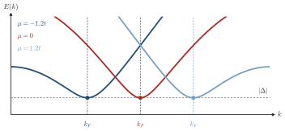
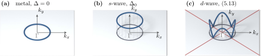
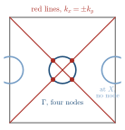

Advanced Quantum Materials 2027 · All lectures · Lecture notes
Session 5. Superconductivity, Nambu Representation and Majorana Physics
5.9 An example of a gap that opens independently of the dispersion
Equation (5.9) already tells us something that the slides of the lecture show with explicit band plots. The gap opens at the minimum of \(E(\mathbf k)\), which is where \(\varepsilon(\mathbf k) = 0\), that is, exactly on the original Fermi surface, and the minimum gap there is \(|\Delta(\mathbf k)|\) evaluated on that Fermi surface. Nothing in this argument depends on the details of \(\varepsilon(\mathbf k)\), such as the range of the hopping, the lattice geometry or the position of the chemical potential. For concreteness, let us take the single-orbital square lattice with \(\varepsilon(\mathbf k) = -2t\left(\cos k_x + \cos k_y\right) - \mu\), as in (2.14), and a chemical potential such that the physical red band and the spurious blue mirror band cross. When we turn on a constant \(\Delta\), a gap of size \(2|\Delta|\) opens at every such crossing, for any choice of the chemical potential along this dispersion. The same statement holds if we do the calculation on the triangular lattice instead of the square lattice. As we move the chemical potential across the band of the triangular lattice, a uniform \(\Delta\) still opens a gap everywhere the physical and the spurious bands cross. This is the general signature of conventional superconductivity, which is fully gapped, since a uniform \(\Delta(\mathbf k)\) that does not depend on momentum always gaps the whole Fermi surface, regardless of the microscopic details. Schematic Schematic 5.4 shows this for a chain and three chemical potentials. The curve moves and the Fermi momentum moves, and the minimum of \(E(k)\) stays at \(|\Delta|\).

Notebook check-in: session5.ipynb, “Superconductivity, full spectral function and electron spectral function” (Core), and “The impact of superconductivity in an electronic structure” (Challenge)
Reproduce the square-lattice example above. Plot the spectral function of the electron sector with \(\Delta = 0\), where there are two crossing copies, and then with \(\Delta \ne 0\), where a gap of size \(2|\Delta|\) opens at the crossing, as in eq. 5.9. Repeat this for the triangular-lattice dispersion and check that the gap opens regardless of where you put the chemical potential.
5.10 Metal, gapped and nodal superconductor for one Fermi surface
Not every pairing function \(\Delta(\mathbf k)\) is independent of momentum, and this gives more interesting cases. For a given electronic dispersion \(\varepsilon(\mathbf k)\) there are in general three qualitatively different outcomes.
No superconductivity (\(\Delta = 0\)). This is a metal, which is gapless everywhere on the Fermi surface.
Conventional (s-wave) superconductivity. Here \(\Delta(\mathbf k) \ne 0\) everywhere on the Fermi surface, so \(E(\mathbf k)\) in (5.9) stays away from zero everywhere, and there is a full gap.
Unconventional, nodal superconductivity. Here \(\Delta(\mathbf k)\) vanishes along some lines or points of the Brillouin zone. Wherever the Fermi surface crosses one of these nodal lines, \(E(\mathbf k) = 0\) even though \(\Delta \ne 0\) nearby. The system is gapped in most of reciprocal space, but it stays gapless, which means metallic, at isolated momenta or along nodal lines.

Figure 5.2 shows the three cases next to each other, in the Brillouin zone and also as the gap along the Fermi surface itself, which is the only place where the gap can be read at all. The high-temperature cuprate superconductors are the standard example of scenario 3 in real materials. They are real superconductors, but their gap function has nodes, so parts of their Fermi surface stay gapless even in the superconducting state. This division into three cases holds for any lattice geometry, and the lecture shows it explicitly for the Fermi surfaces of both the square and the triangular lattice.
The \(d\)-wave gap (5.13) vanishes on the diagonals \(k_x=\pm k_y\). A small Fermi pocket is centered at \(X=(\pi,0)\). Is the superconductor nodal?
Show the answers
- A. ✗ False
This is false. Take \(\Delta_d=\Delta_0(\cos k_x-\cos k_y)\) and a pocket around \(X\). All its points have \(k_x\approx\pi\) and \(k_y\approx0\), so \(|\Delta_d|\approx2\Delta_0\) and \(E\geq2\Delta_0\) there. The nodes exist, but they are not on the Fermi surface.
- B. ✗ False
This is false. Four nodes appear for a pocket around \(\Gamma\), as in figure 5.2c, where the diagonals cross it. A small pocket around \(X\) has \(|k_x|-|k_y|\approx\pi\), so it is far from the line \(k_x=\pm k_y\).
- C. ✓ True
This is true. Only nodes that cross the Fermi surface give gapless quasiparticles. Near \(X\) we have \(\cos k_x-\cos k_y\approx-2\), so \(E\) in (5.9) stays finite all around the pocket.

A \(d\)-wave gap with pockets at \(\Gamma\) and at \(X\). The nodal lines cross the first pocket in four points and miss the second one.
Notebook check-in: session5.ipynb, “Unconventional singlet superconducting orders” (Challenge), and “Gapped and nodal superconducting orders” (Core)
Build a \(\Delta(\mathbf k)\) that depends on momentum and vanishes along a line in the Brillouin zone, for example the d-wave form of section 5.13 below. Then check numerically with (5.9) that the gap closes exactly where the Fermi surface crosses this nodal line, which is different from the uniformly gapped case of section 5.9.
Try it. In the cell, the function deltak(mode) plots \(\Delta(\mathbf k)\) for each order. At \(\mu=0\) the Fermi surface of the square lattice passes through \((\pi/2,\pi/2)\), where \(\cos k_x-\cos k_y=0\). Check that the \(d\)-wave map vanishes there and the \(s\)-wave map does not.